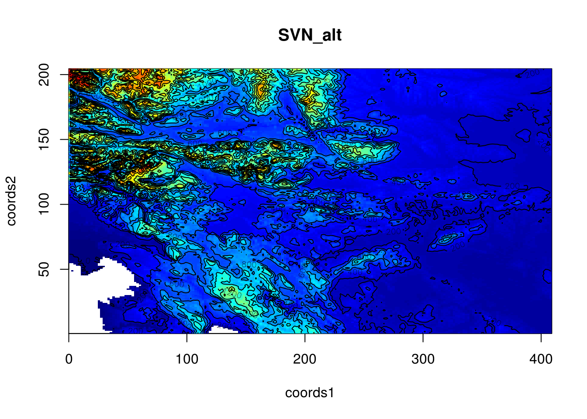

This Vignette is supposed to give you a short introduction and a glance at the key features of geo2smoof. For updated information make sure to check the GitHub project page:
geo2smoof truns a elevation map into a function that returns the elevation for given coordinate input. More precisely this package generates smoof functions as these contain valuable meta information for each function.
alt = raster::getData('alt', country='SVN')
sf = convertRasterLayerToSmoof(raster.layer = alt)
getParamSet(sf)## Type len Def Constr Req Tunable Trafo
## coords numericvector 2 - 1,1 to 408,204 - TRUE -sf(c(204,103))## [1] 343plot2DNumeric(sf, render.levels = TRUE)
You can register for a free API-Key here. Afterwards you can save it using saveGeo2SmoofConfig() or write it manually in every call of convertGoogleApiToSmoof(). We will not use an API-Key here and thus are limited to just a few calls
lat.range = c(28.5, 27.5)
lon.range = c(86.5, 87.5)
gsf = convertGoogleApiToSmoof(lat.range = lat.range, lon.range = lon.range)
gsf(c(29,87))## [1] 5216.916plot2DNumeric(gsf, render.levels = TRUE, n.samples = 6)